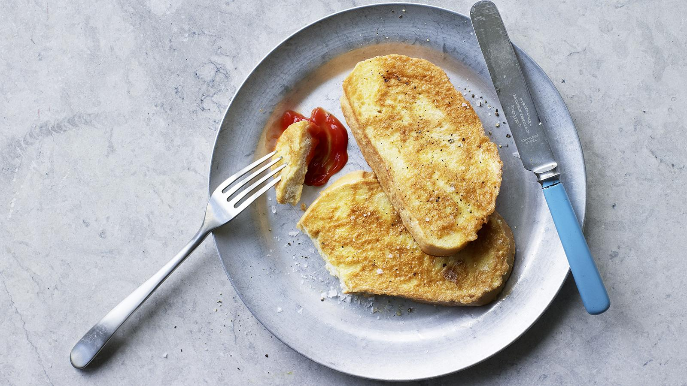

Eggy bread

Description
quick and cheap eggy bread is great for breakfast or an afternoon snack. Serve with your favourite sauce.
Each serving provides 372 kcal, 19g protein, 47g carbohydrate (of which 3g sugars), 12g fat (of which 2g saturates), 3g fibre and 1.3g salt.
Ingredients
- 1 large egg
- 1/2 tbsp milk
- vegetable oil
- 2 thick slices of bread, halved
- salt and black pepper
- tomato ketchup to serve
Steps
- Beat together the egg, milk and a generous amount of salt and pepper in a shallow bowl.
- Heat enough oil to just cover the bottom of a large frying pan over a medium heat. When the oil starts to shimmer, dip the bread into the egg mixture and add it to the pan. Cook for 5 minutes on each side, or until golden-brown.
- Serve with tomato ketchup or brown sauce.